Mes certifications
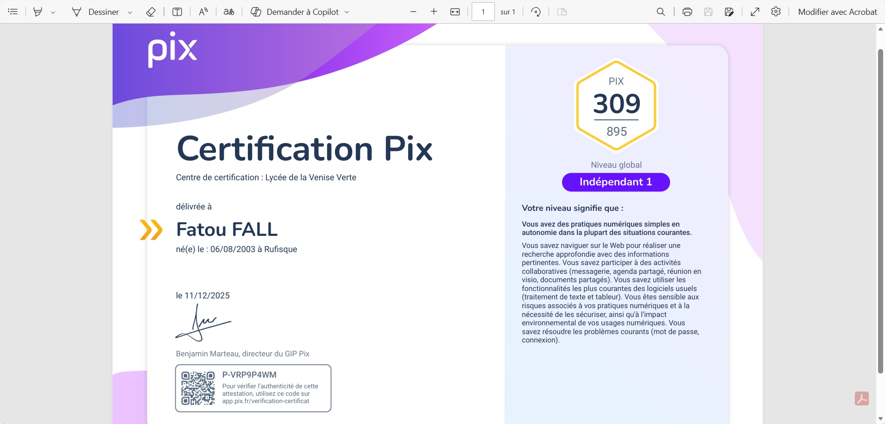
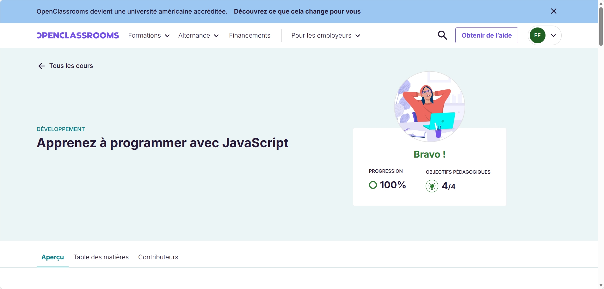
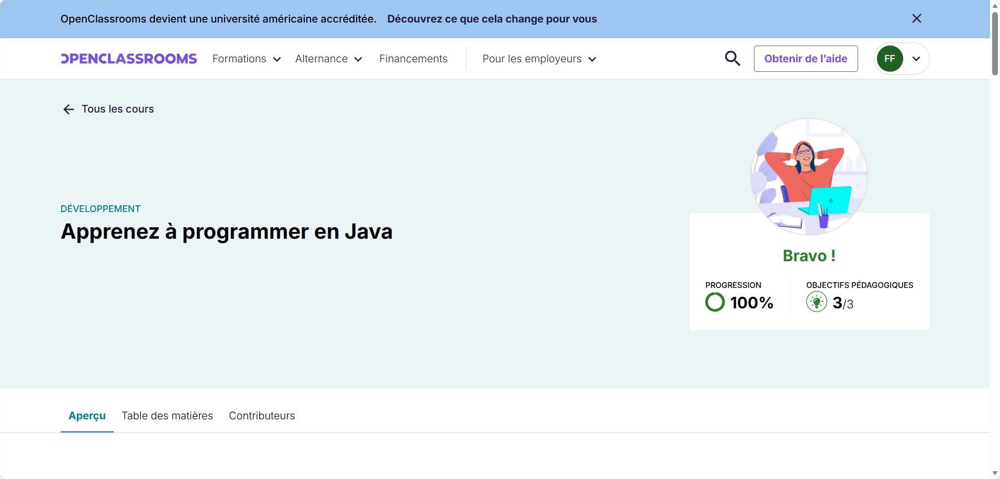
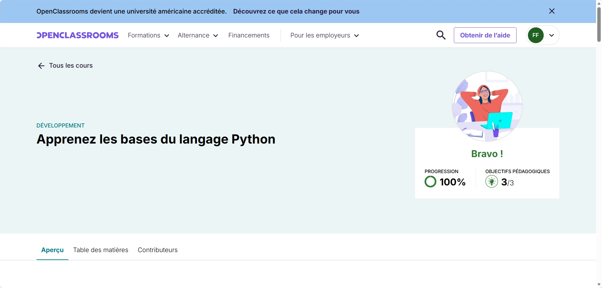
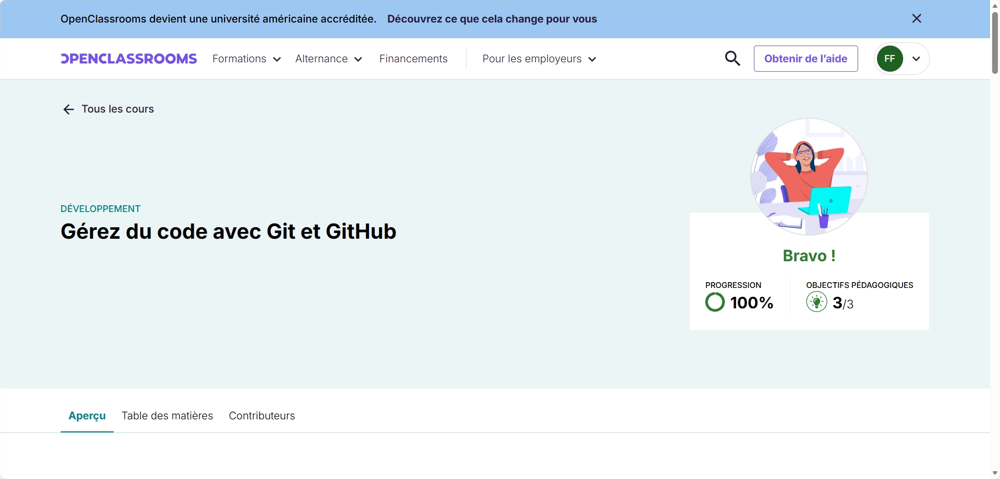
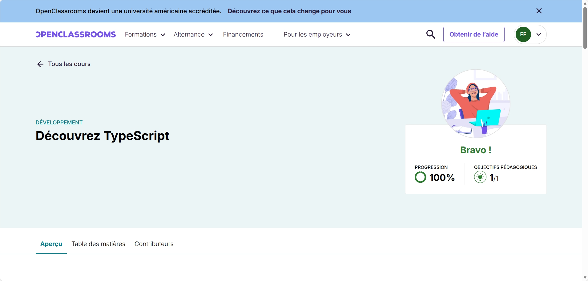
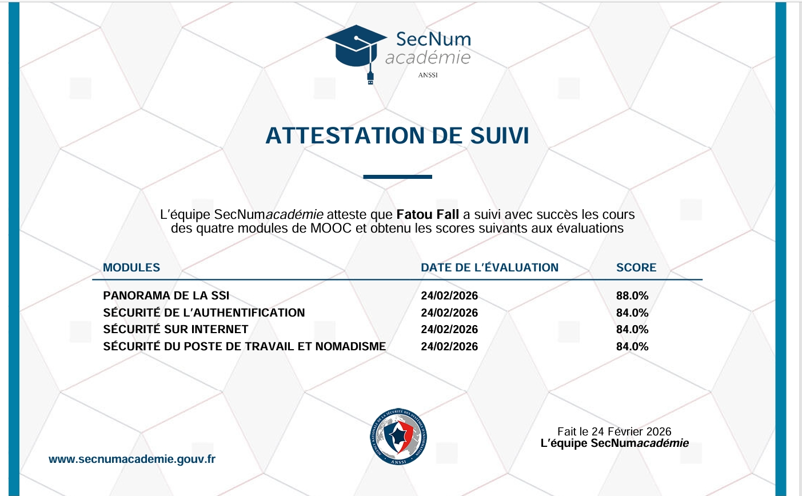
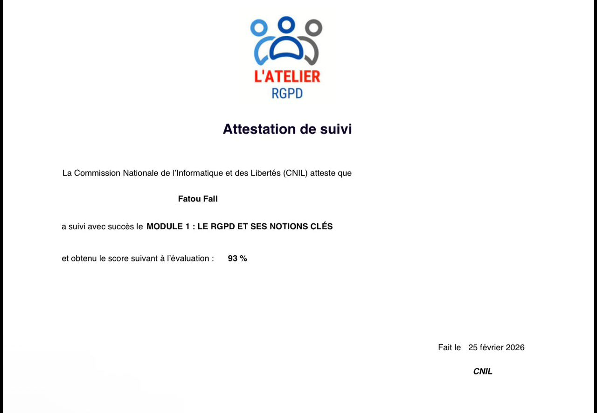
Mon parcours
Mes projets

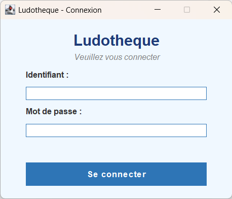
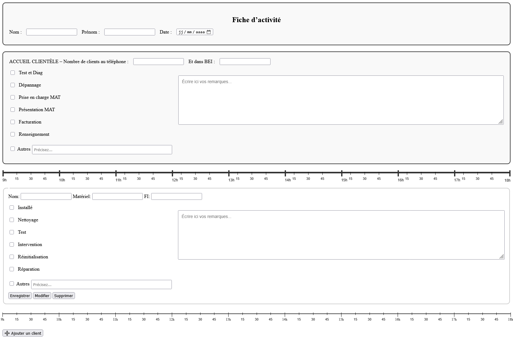
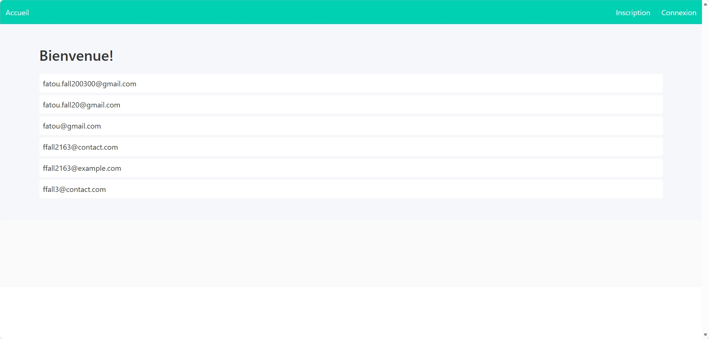
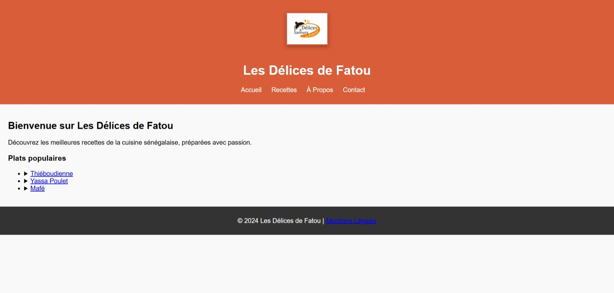
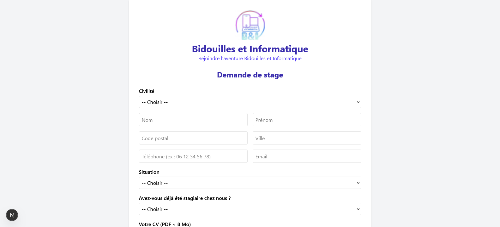
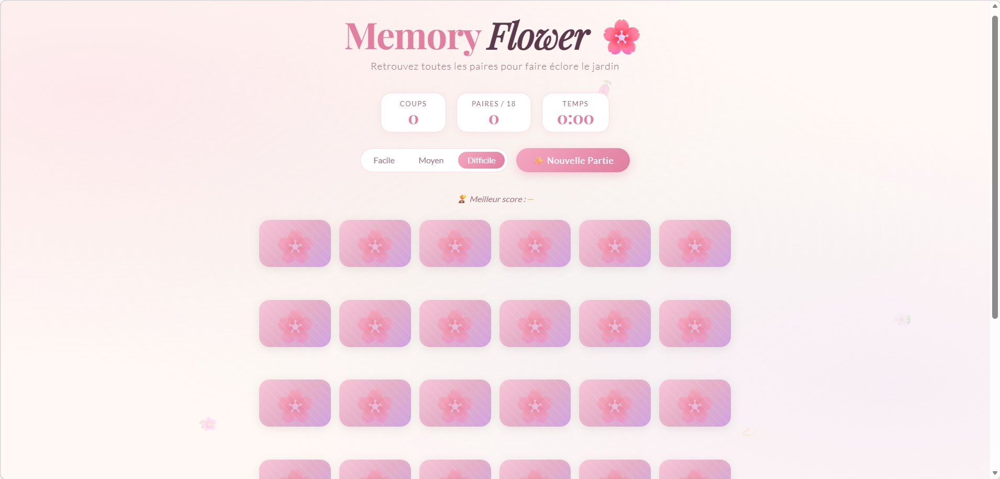
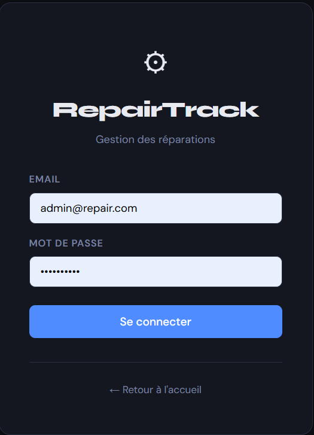
🐍 Boîte à outils Python
Contexte : Projet réalisé en cours de formation pour approfondir mes connaissances en cybersécurité et en Python.
Ce que j'ai développé :
• Générateur de mots de passe — création de mots de passe complexes et aléatoires selon des critères définis (longueur, caractères spéciaux)
• Attaque brute force — simulation d'attaque par récursion pour tester la robustesse d'un mot de passe
• Attaque par dictionnaire — comparaison d'un hash contre une liste de mots de passe courants
• Scanner de ports — détection des ports ouverts sur une adresse IP donnée
• Vérificateur de force — évaluation du niveau de sécurité d'un mot de passe
Résultat : Une boîte à outils fonctionnelle documentée en PDF, démontrant les risques liés aux mots de passe faibles.
Ma veille
Dans le cadre de mon BTS SIO, j'ai mené une veille sur l'impact de l'intelligence artificielle générative sur la cybersécurité et le développement logiciel.
L'IA générative (GitHub Copilot, ChatGPT) transforme la façon dont les développeurs écrivent et sécurisent leur code. Elle peut détecter des vulnérabilités, suggérer des correctifs et générer du code plus robuste — mais soulève aussi des risques : génération de code vulnérable, hallucinations, dépendance excessive.
Cette veille explore les opportunités et les limites de l'IA générative dans la sécurisation des logiciels.
Voir la présentation CanvaLe BTS SIO
Option SLAM – Ma spécialité
Solutions Logicielles et Applications Métiers. Développement web et mobile, programmation orientée objet, bases de données et gestion de projets.
Option SISR
Solutions d'Infrastructure, Systèmes et Réseaux. Administration système, gestion des réseaux et sécurisation des infrastructures.
Débouchés SLAM
Développeur web full stack, développeur d'applications mobiles, concepteur de solutions logicielles ou chef de projet digital, ou poursuite en licence pro / école d'ingénieurs.
Épreuve E5
Évalue la capacité à gérer, mettre en œuvre et documenter des réalisations professionnelles issues des stages et de la formation, présentées à l'oral devant un jury.
Tableau de synthèse E5Me contacter
Vous souhaitez me contacter pour une alternance ou un projet ? N'hésitez pas !